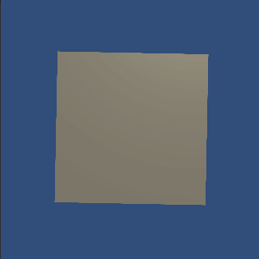
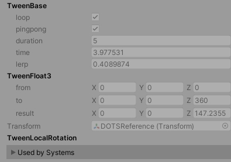
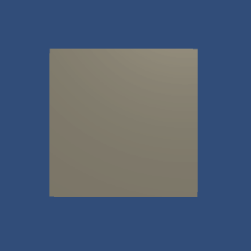
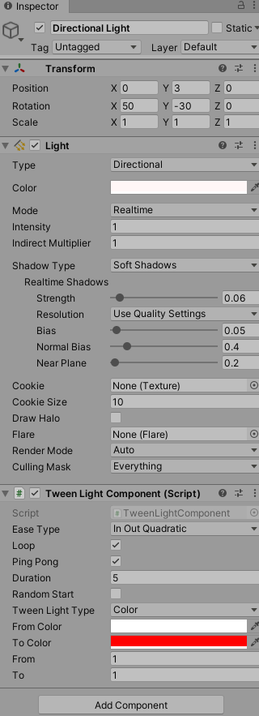
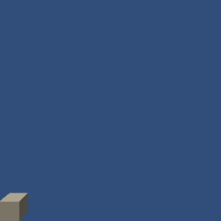
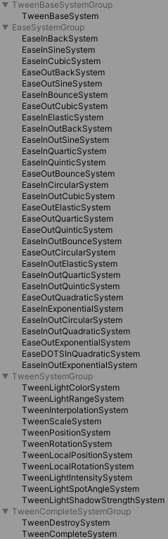
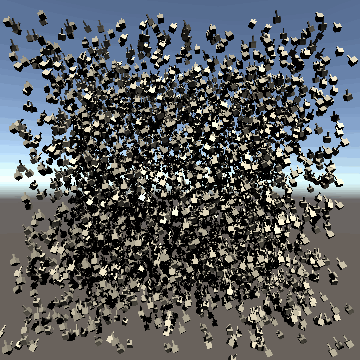
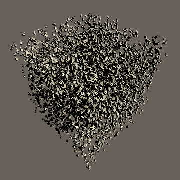
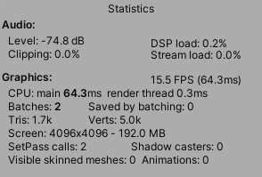
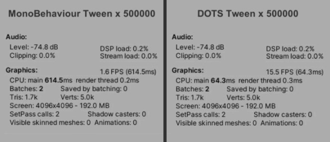

在先前的文章 Unity DOTS – A Case Study of Brick Breaker 中，講解了如何利用 Unity DOTS 完成一個簡易的打磚塊遊戲，這次會在 DOTS 的基礎上，建立一套 Tween 系統。
文章內容包含：
基於 MonoBehaviour 的 Tween Rotation
如何將 Tween 轉換至 DOTS
如何利用 TransformAccess 將 Entity 與 Transform 連接起來
如何將 GameObject 轉換成 Entity
如何將 Ease 轉換至 DOTS
如何在 MonoBehaviour 與 DOTS 之間溝通
如何利用 EntityCommandBuffer 為 Enity 添加 Component 及刪除 Entity
Unity: 2019.3.1f1
Entities: preview.15 – 0.9.1
Jobs: preview.3 – 0.2.8
軟體開發的行業中常常都會利用到 Tween 並搭配 Ease Funciton 來製作簡易的移動、旋轉、縮放動畫。
而在 Unity AssetStore 中也有許多 Tween 方案可供開發者選擇，相關內容可參考過往文章 iTween, HOTween, DOTween, LeanTween 不專業比較。
這次則要跳脫 MonoBehaviour 的框架，利用 DOTS 框架完成 Tween 系統。
與 MonoBehaviour 相比，在50萬個物件的測試環境下，將 CPU usage 從 614.5ms 優化至 64.3ms，帶來 89.5% 的效能改善。
首先利用傳統的製作方式使用 MonoBehaviour 來完成一個簡易的 Tween Local Rotation，作為測試依據。
using UnityEngine;
public class ClassicTweenLocalRotation : MonoBehaviour
{
public Vector3 from;
public Vector3 to;
public float duration;
public bool loop;
public bool pingpong;
private Transform m_transform;
private float m_time;
private float m_lerp;
private void Awake()
{
m_transform = transform;
}
private void Update()
{
m_time += Time.deltaTime;
if(m_time >= duration)
{
m_time = 0f;
}
if(pingpong)
{
if(m_time <= duration * 0.5f)
{
m_lerp = m_time / duration * 2f;
}
else
{
m_lerp = (m_time - duration * 0.5f) / duration * 2f;
m_lerp = 1 - m_lerp;
}
}
m_transform.localEulerAngles = Vector3.Lerp(from, to, m_lerp);
}
}
50萬個 MonoBehaviour Tween 物件、不顯示 Renderer 的測試數據
將上述腳本進行拆解，可以知道一個 Tween 系統可以分成幾個部分，計算插值、計算插值數據、更新插值數據。
1. TweenBase
用來紀錄每個 Tween 物件需要使用的資料。
using Unity.Entities;
namespace DOTS.Tween
{
public struct TweenBase : IComponentData
{
public bool loop;
public bool pingpong;
public float duration;
public float time;
public float lerp;
}
}2. TweenBaseSystem
透過 Entities.ForEach 過濾含有 TweenBase 的 Enities 並計算對應插值。
using Unity.Jobs;
using Unity.Entities;
using Unity.Collections;
namespace DOTS.Tween
{
public class TweenBaseSystem : JobComponentSystem
{
protected override JobHandle OnUpdate(JobHandle inputDeps)
{
float deltaTime = Time.DeltaTime;
return Entities.ForEach((ref TweenBase tweenBase) =>
{
tweenBase.time += deltaTime;
if (tweenBase.time > tweenBase.duration)
{
if (tweenBase.loop)
{
tweenBase.time = 0f;
}
else
{
tweenBase.time = tweenBase.duration;
}
}
if (tweenBase.pingpong)
{
if (tweenBase.time <= tweenBase.duration * 0.5f)
{
tweenBase.lerp = tweenBase.time / tweenBase.duration * 2f;
}
else
{
tweenBase.lerp = 1 - (tweenBase.time - tweenBase.duration * 0.5f) / tweenBase.duration * 2f;
}
}
else
{
tweenBase.lerp = tweenBase.time / tweenBase.duration;
}
}).Schedule(inputDeps);
}
}
}3. TweenFloat3
計算 Float3 資料的插值數據。
using Unity.Entities;
using Unity.Mathematics;
namespace DOTS.Tween
{
public struct TweenFloat3 : IComponentData
{
public float3 from;
public float3 to;
public float3 result;
}
}4. TweenInterpolationSystem
過濾含有 TweenBase 及 TweenFloat3 的 Entities 並計算 TweenFloat3 插值。
using Unity.Jobs;
using Unity.Entities;
using Unity.Mathematics;
namespace DOTS.Tween
{
public class TweenInterpolationSystem : JobComponentSystem
{
protected override JobHandle OnUpdate(JobHandle inputDeps)
{
float deltaTime = Time.DeltaTime;
return Entities
.ForEach((ref TweenFloat3 tweenFloat3, in TweenBase tweenBase) =>
{
tweenFloat3.result = math.lerp(tweenFloat3.from, tweenFloat3.to, tweenBase.lerp);
}).Schedule(inputDeps);
}
}
}完成上述的步驟後，在 Entity 中已經可以計算出對應的插值數據，接下來為了將插值數據同步回 Transform，需要利用 TransformAccess 進行處理。
1. TweenLocalRotation
用來作為過濾 Entity 的 Component，包含此 Component 的 Entity 都會執行 Tween Local Rotation。
public struct TweenLocalRotation : IComponentData { }2. TweenLocalRotationSystem
取得需要的 EntityQuery，使用 EntityQuery.GetTransformAccessArray 及 GetComponentDataArray 將 TweenFloat3 的資料同步至 Transform.localRotation。
using Unity.Collections;
using Unity.Entities;
using Unity.Jobs;
using UnityEngine;
using UnityEngine.Jobs;
using Unity.Mathematics;
using Unity.Burst;
namespace DOTS.Tween
{
public class TweenLocalRotationSystem : JobComponentSystem
{
[BurstCompile]
private struct ApplyRotationJob : IJobParallelForTransform
{
[DeallocateOnJobCompletion] [ReadOnly] public NativeArray<TweenFloat3> tweenFloat3s;
public void Execute(int index, TransformAccess transform)
{
transform.localRotation = quaternion.EulerXYZ(math.radians(tweenFloat3s[index].result));
}
}
private EntityQuery m_entityQuery;
protected override void OnCreate()
{
m_entityQuery = GetEntityQuery(ComponentType.ReadWrite<Transform>(), ComponentType.ReadOnly(typeof(TweenFloat3)), ComponentType.ReadOnly(typeof(TweenLocalRotation)));
}
protected override JobHandle OnUpdate(JobHandle inputDeps)
{
if (m_entityQuery.CalculateEntityCount() == 0)
{
return inputDeps;
}
TransformAccessArray transformAccessArray = m_entityQuery.GetTransformAccessArray();
NativeArray<TweenFloat3> tweenFloat3s = m_entityQuery.ToComponentDataArray<TweenFloat3>(Allocator.TempJob);
ApplyRotationJob applyRotationJob = new ApplyRotationJob()
{
tweenFloat3s = tweenFloat3s,
};
return applyRotationJob.Schedule(transformAccessArray, inputDeps);
}
}
}前置作業完成後，接下來需要將 GameObject 轉換成 Entity，讓開發者可以透過 Add Component 的方式快速的在物件上新增 Tween Local Rotation 功能。
1. 生成 Entity
取得當前世界所使用的 EntityManager 後，使用 EntityManager.CreateEntity 建立 Entity。
EntityManager entityManager = World.DefaultGameObjectInjectionWorld.EntityManager;
Entity entity = entityManager.CreateEntity();2. 配置 Entity
entityManager.AddComponentObject(entity, transform);
entityManager.AddComponent<TweenLocalRotation>(entity);
TweenBase tweenBase = new TweenBase()
{
loop = loop,
pingpong = pingpong,
duration = duration,
};
entityManager.AddComponentData(entity, tweenBase);
TweenFloat3 tweenFloat3 = new TweenFloat3()
{
from = from,
to = to,
};
entityManager.AddComponentData(entity, tweenFloat3);
DOTS Tween Rotation 包含的 Components目前為止已經完成基於 DOTS 的 Linear Tween Local Rotation 功能，其餘的 Ease Type 只需要在 TweenInterpolationSystem 執行前，利用 Component 作為插值轉換依據，更新每個 TweenBase 的最終插值即可，下面以 InOutQuadratic 為例。
1. EaseInOutQuadratic
作為 InOutQuadratic Ease Function 的辨識依據。
public struct EaseInOutQuadratic : IComponentData { }2. EaseInOutQuadraticSystem
過濾含有 EaseInOutQuadraticSystem 及 TweenBase 的 Entity 並轉換其插值，需要注意由於 EaseSystem 與 TweenInterpolationSystem 有著先後執行順序的關係，所以需要加入 [UpdateAfter] 讓系統能夠按造正確的執行順序執行。
using Unity.Jobs;
using Unity.Entities;
using Unity.Collections;
namespace DOTS.Tween
{
[UpdateAfter(typeof(TweenInterpolationSystem))]
public class EaseInOutQuadraticSystem : JobComponentSystem
{
private static float Ease(float x)
{
if (x < 0.5f)
{
return 2 * x * x;
}
else
{
return (-2 * x * x) + (4 * x) - 1;
}
}
protected override JobHandle OnUpdate(JobHandle inputDeps)
{
return Entities
.WithAll<EaseInOutQuadratic>()
.ForEach((ref TweenBase tween) =>
{
tween.lerp = Ease(tween.lerp);
}).Schedule(inputDeps);
}
}
}3. 配置 Entity
建立 Entity 時，加入 EaseInOutQuadratic Component 作為插值轉換依據。
entityManager.AddComponent<EaseInOutQuadratic>(entity);4. 完成 InOutQuadratic Tween Local Rotation

基於 DOTS 的 Tween Rotation 演示上述的例子中透過 TransformAccess 來與 DOTS 做溝通，那麼如果想要在 MonoBehaviour 與 DOTS 之間溝通是否可行呢?
答案是可以的，但需要注意由於 Unity 將 TransformAccess 黑盒起來，透過 IJobParallelForTransform 可以很輕易的將 Trasnform 與 Entity 之間的數據傳送 Job 化，若是使用其他 MonoBehaviour 則沒有辦法利用 IJobParallelForTransform 進行處理，且必須捨棄 Burst 帶來的效能提升，下面以 TweenLightcolor 為例。
1. TweenLightColor
作為 TweenLightColor 的辨識依據
public struct TweenLightColor : IComponentData { }2. TweenLightColorSystem
與 TweenLocalRotationSystem 使用 IJobParallelForTransform 不同，這邊直接使用 Entities.ForEach 過濾出 Light、TweenFloat4 將 Entity 數據傳回 Light，為了保證在數據溝通時關聯資料是安全的狀態，需要再 Entities.ForEach 前使用 inputDeps.Complete 確認資料更新完畢，且需要使用 WithoutBurst 關閉 Burst 編譯。
using Unity.Entities;
using Unity.Jobs;
using UnityEngine;
namespace DOTS.Tween
{
public class TweenLightColorSystem : JobComponentSystem
{
protected override JobHandle OnUpdate(JobHandle inputDeps)
{
inputDeps.Complete();
Entities.WithoutBurst()
.WithAll<TweenLightColor>()
.ForEach((Light light, in TweenFloat4 tweenFloat4) =>
{
Color color = light.color;
color.r = tweenFloat4.result.x;
color.g = tweenFloat4.result.y;
color.b = tweenFloat4.result.z;
color.a = tweenFloat4.result.w;
light.color = color;
}).Run();
return default;
}
}
}
基於 DOTS 的 Tween Color 演示目前完成的功能，無論是否使用循環播放，Entity 都不會在播放結束時將 Entity 刪除，導致 Entity 殘留在遊戲內，所以需要新增一個功能讓不是循環播放的 Tween Entity 能夠在播放完畢時自動刪除。
1. TweenBase
在 TweenBase 加入 Entity 資料
public struct TweenBase : IComponentData
{
public Entity entity;
...
}2. TweenComplete
作為 Tween 是否完成的辨識依據。
public struct TweenComplete : IComponentData { }3. TweenBaseSystem
由於需要使用 EntityCommandBuffer，所以必須在 Entities.ForEach 中加入 int entityInQueryIndex 參數，須注意 entityInQueryIndex 為固定名稱，不可隨意更換。並且在 Job 執行後須將 Job 納入 EntityCommandBufferSystem 進行管理。
...
JobHandle jobHandle = Entities.ForEach((int entityInQueryIndex, ref TweenBase tweenBase) =>
{
...
}).Schedule(inputDeps);
m_entityCommandBufferSystem.AddJobHandleForProducer(jobHandle);
return jobHandle;4. EntityCommandBuffer
在 Job 開始前先建立一個 EntityCommandBuffer，並在 Tween 結束時使用 EntityCommandBuffer.AddComponent 添加 TweenComplete 組件
...
EntityCommandBuffer.Concurrent entityCommandBuffer = m_entityCommandBufferSystem.CreateCommandBuffer().ToConcurrent();
JobHandle jobHandle = Entities.ForEach((int entityInQueryIndex, ref TweenBase tweenBase) =>
{
tweenBase.time += deltaTime;
if (tweenBase.time > tweenBase.duration)
{
if (tweenBase.loop)
{
...
}
else
{
...
entityCommandBuffer.AddComponent<TweenComplete>(entityInQueryIndex, tweenBase.entity);
}
}
...
}).Schedule(inputDeps);5. TweenCompleteSystem
TweenCompleteSystem 負責過濾含有 TweenComplete 的 Entity，判斷該 Entity 是否需要執行 Complete Callback，以及添加 TweenDestroy Component，讓接下來的 TweenDestroySystem 能夠將含有 TweenDestroy 的 Entity 過濾並刪除。
EntityManager.AddComponent<TweenDestroy>(entities[i]);6. TweenDestroySystem
TweenDestroySystem 負責過濾含有 TweenDestroy 的 Entity，透過 EntityCommandBuffer.DestroyEntity 刪除 Entity，如此一來便完成含有 Destroy 及 Complete Callback 的 DOTS Tween System。
entityCommandBuffer.DestroyEntity(entityInQueryIndex, tweenBase.entity);using UnityEngine;
using DOTS.Tween;
public class TweenCompleteDemo : MonoBehaviour
{
public Vector3[] moveFrom;
public Vector3[] moveTo;
public float moveDuration;
public Vector3 rotateFrom;
public Vector3 rotateTo;
public float rotateDuration;
private int m_index = -1;
private void Update()
{
if (Input.GetKeyDown(KeyCode.Space))
{
m_index = -1;
OnRotateComplete();
}
}
private void OnRotateComplete()
{
m_index++;
if (m_index >= moveFrom.Length)
{
return;
}
transform.DoLocalMove(moveFrom[m_index], moveTo[m_index], moveDuration).OnComplete(OnMoveComplete);
}
private void OnMoveComplete()
{
transform.DoLocalRotate(rotateFrom, rotateTo, rotateDuration).OnComplete(OnRotateComplete);
}
}
基於 DOTS 的 Tween Callback 演示
DOTS Tween System 執行順序1. 移動物件
transform.DoMove(from, to, duration).SetEaseType(easeType).SetLoop(loop).SetPingPong(pingPong);
transform.DoLocalMove(from, to, duration).SetEaseType(easeType).SetLoop(loop).SetPingPong(pingPong);2. 旋轉物件
transform.DoRotate(from, to, duration).SetEaseType(easeType).SetLoop(loop).SetPingPong(pingPong);
transform.DoLocalRotate(from, to, duration).SetEaseType(easeType).SetLoop(loop).SetPingPong(pingPong);3. 縮放物件
transform.DoScale(from, to, duration).SetEaseType(easeType).SetLoop(loop).SetPingPong(pingPong);4. 光源顏色
light.DoColor(from, to, duration).SetEaseType(easeType).SetLoop(loop).SetPingPong(pingPong);5. 光源範圍
light.DoRange(from, to, duration).SetEaseType(easeType).SetLoop(loop).SetPingPong(pingPong);6. 光源聚光角度
light.DoSpotAngle(from, to, duration).SetEaseType(easeType).SetLoop(loop).SetPingPong(pingPong);7. 光源強度
light.DoIntensity(from, to, duration).SetEaseType(easeType).SetLoop(loop).SetPingPong(pingPong);8. 陰影強度
light.DoShadowStrength(from, to, duration).SetEaseType(easeType).SetLoop(loop).SetPingPong(pingPong);
DOTS Tween 最終成果1
DOTS Tween 最終成果2
50萬個 DOTS Tween 物件、不顯示 Renderer 的測試數據
MonoBehaviour Tween vs DOTS Tween